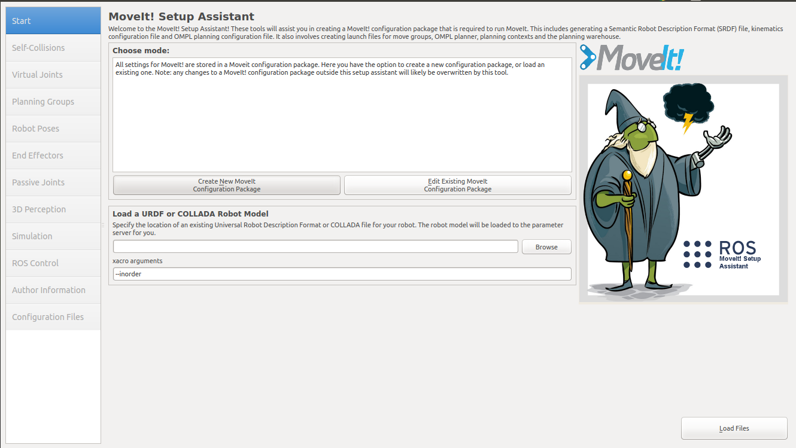
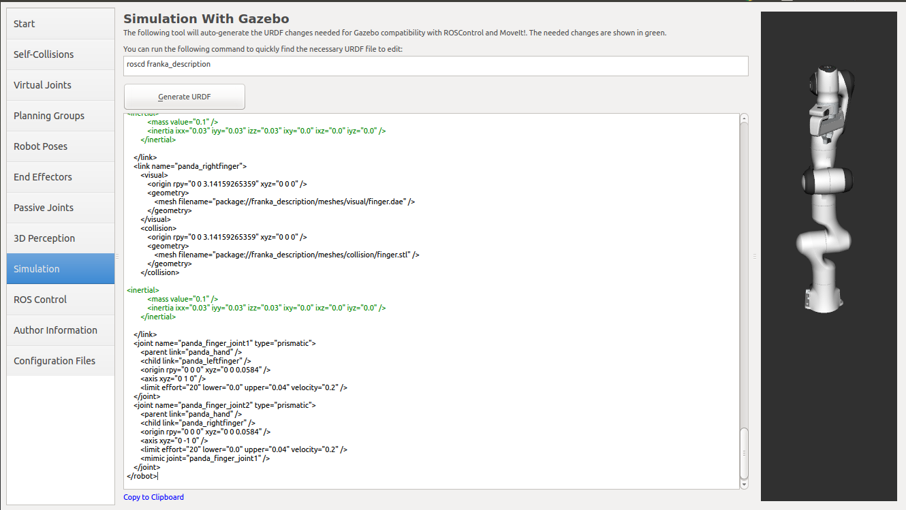

MSA - Moveit setup Assistant

Overview
The MoveIt Setup Assistant is a graphical user interface for configuring any robot for use with MoveIt. Its primary function is generating a Semantic Robot Description Format (SRDF) file for your robot. Additionally, it generates other necessary configuration files for use with the MoveIt pipeline. To learn more about the SRDF, you can go through the URDF/SRDF Overview page.
Step 1: Start
To start the MoveIt Setup Assistant:
roslaunch moveit_setup_assistant setup_assistant.launch
This will bring up the start screen with two choices: Create New MoveIt Configuration Package or Edit Existing MoveIt Configuration Package.
Click on the Create New MoveIt Configuration Package,
then click on the browse button and navigate to the YOURFILE.urdf.xacro file (this might take a few seconds).
Step 2: Generate Self-Collision Matrix
The Default Self-Collision Matrix Generator searches for pairs of links on the robot that can safely be disabled from collision checking, decreasing motion planning processing time. These pairs of links are disabled when they are always in collision, never in collision, in collision in the robot’s default position or when the links are adjacent to each other on the kinematic chain. The sampling density specifies how many random robot positions to check for self collision. Higher densities require more computation time while lower densities have a higher possibility of disabling pairs that should not be disabled. The default value is 10,000 collision checks. Collision checking is done in parallel to decrease processing time.
Click on the Self-Collisions pane selector on the left-hand side and click on the Generate Collision Matrix button. The Setup Assistant will work for a few second before presenting you the results of its computation in the main table.
Step 3: Add Virtual Joints
Virtual joints are used primarily to attach the robot to the world. For the Panda we will define only one virtual joint attaching the panda_link0 of the Panda to the world world frame. This virtual joint represents the motion of the base of the robot in a plane.
Click on the Virtual Joints pane selector. Click on Add Virtual Joint
Set the joint name as “virtual_joint”
Set the child link and the parent frame usually named “world”.
Set the Joint Type as “fixed” and click save.
Step 4: Add Planning Groups
Planning groups are used for semantically describing different parts of your robot, such as defining what an arm is, or an end effector.
Click on the Planning Groups pane selector.

To add a group click Add Group and:
Enter Group Name
Choose kdl_kinematics_plugin/KDLKinematicsPlugin as the kinematics solver.
Note
if you have a custom robot and would like a powerful custom IK solver, see Kinematics/IKFast
Let Kin. Search Resolution and Kin. Search Timeout stay at their default values.
Now, click on the Add Joints button. You will see a list of joints on the left hand side. You need to choose all the joints that belong to the same group and add them to the right hand side. The joints are arranged in the order that they are stored in an internal tree structure. This makes it easy to select a serial chain of joints.
Select joint(s) and click on the > button to add them into the list of selected joints on the right.
Click Save to save the selected group.
Step 5: Add Robot Poses
The Setup Assistant allows you to add certain fixed poses into the configuration. This helps if, for example, you want to define a certain position of the robot as a Home position.
Click on the Robot Poses pane.
Click Add Pose. Choose a name for the pose. The robot will be in its Default position where the joint values are set to the mid-range of the allowed joint value range. Move the individual joints around until you are happy and then Save the pose. Note how poses are associated with particular groups. You can save individual poses for each group.
IMPORTANT TIP: Try to move all the joints around. If there is something wrong with the joint limits in your URDF, you should be able to see it immediately here.
Step 6: Label End Effectors
Designating this group as end effectors allows some special operations to happen on them internally.
Click on the End Effectors pane.
Click Add End Effector.
Choose an End Effector Name.
Select the End Effector Group.
Select the Parent Link for this end-effector.
Leave Parent Group blank.
Step 7: Add Passive Joints
The passive joints tab is meant to allow specification of any passive joints that might exist in a robot. These are joints that are unactuated on a robot (e.g. passive casters.) This tells the planners that they cannot (kinematically) plan for these joints because they can’t be directly controlled.
Step 8: 3D Perception
The 3D Perception tab is meant to set the parameters of the YAML configuration file for configuring the 3D sensors sensors_3d.yaml.
For more details about those parameters please see perception pipeline section.

Note
You can also choose None to avoid perception.
Step 9: Gazebo Simulation
The Simulation tab can be used to help you simulate your robot with Gazebo by generating a new Gazebo compatible urdf if needed.

You can use the generated robot urdf to spawn the robot in Gazebo in the following way.
Use rosrun to start gazebo empty world:
ros2 launch gazebo_ros empty_world.launch paused:=true use_sim_time:=false gui:=true throttled:=false recording:=false debug:=true
Use rosrun to spawn the robot:
ros2 run gazebo_ros spawn_model -file </path_to_new_urdf/file_name.urdf> -urdf -x 0 -y 0 -z 1 -model panda
Warning
commands not checked on ROS2
Step 10: ROS Control
ROS Control is a set of packages that include controller interfaces, controller managers, transmissions and hardware_interfaces, for more details please look at ros2_control.
ROS Control tab can be used to auto generate simulated controllers to actuate the joints of your robot. This will allow us to provide the correct ROS interfaces MoveIt.
Click on the ROS Control pane selector.
Click on Add Controller.
Enter Controller Name
Choose the controller type
Next you have to choose this controller joints, you can add joints individually or add all the joints in a planning group all together.
Now, click on Add Planning Group Joints.
Choose a planning group to add all the joints in that group to the arm controller.

Click Save to save the selected controller.
Step 12: Generate Configuration Files
You are almost there. One last step - generating all the configuration files that you will need to start using MoveIt
Click on the Configuration Files pane. Choose a location and name for the ROS package that will be generated containing your new set of configuration files. Click browse, select a good location (for example, your home directory), click Create New Folder, give it a name (usually YOURNAME_config) and click Choose. This package does not have to be within your ROS package path. All generated files will go directly into the directory you have chosen.
Click on the Generate Package button. The Setup Assistant will now generate and write a set of launch and config files into the directory of your choosing. All the generated files will appear in the Generated Files/Folders tab and you can click on each of them for a description of what they contain.

You are now done generating the configuration files you need for MoveIt